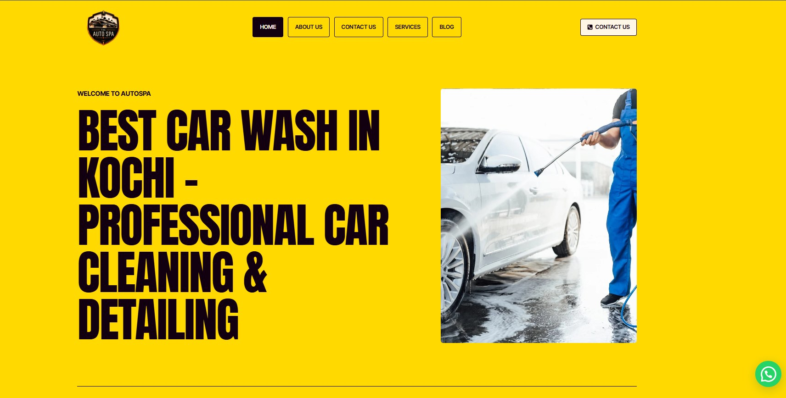

AutoSpa
A complete digital presence for AutoSpa, a car wash and detailing business in Kochi: I created the WordPress website, then supported it with SEO and an ongoing rhythm of social media posts and content.
- Created the WordPress website
- SEO work to improve visibility on search
- Regular social media posting
- Content creation for the brand’s channels
